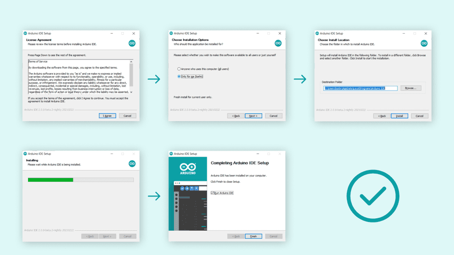

How to get started with Engineering
Hi, my name is Burak Ayyorgun and I wanted to share how I started with Engineering and give advice how you guys might want to start. The main goal is to find what you are interested in & how to chase your own projects.
Who am I, and how I got Started
First, I wanted to give a quick introduction and how I started engineering. Currently, I’m a high school student and I first started my engineering projects in 7th grade for as cheaply as possible. I had acquired an interest in electricity and how electronics components work. So, I started to teach myself these concepts using free resources on the internet; I would dismantle toy trains, cars, or even radios for there electronic parts.
Driven to learn how they worked, I kept a journal to document my progress. I taught myself the physics behind why motors work, or why electrons flow and why batteries work. It all seemed very attractive to me. Once I learned the fundamentals, I got myself electronics kits, which contained components like transistors, capacitors, resistors, LEDs, and many more. After I went through a few tutorials on YouTube, I experimented my making my own circuits. I tried to make transistor calculators, timer circuits, and so much more exciting things. Around this time, I got myself an Arduino kit (from my holiday money) and I slowly started to learn embedded programming. At first, I thought it was kind of cheating in engineering, because you could accomplish a hard task in electronics like blinking an LED, with a couple lines of code I felt that I wasn’t being compelled to learn HOW things worked. However, once I eventually moved onto more complicated projects (mostly robotics related ones) I realized the power of Arduino. Having a single board, capable of accomplishing almost anything just via code, is an incredibly valuable tool.
The reason I am explaining this is to show that you don’t need an expensive budget to start engineering, nor do you need to take an engineering class. All you need is a passionate interest in learning, be motivated to try new challenging topics, patiently dedicated, and a good source that is tailored for self-learners, hence this course!
Getting Started with Arduino
So, you have an interest in engineering and programming and you want to start an Arduino project. The first thing you will need is some knowledge of electronics and some electronic parts to experiment with. I started by making or harvesting my own parts, but I suggest you start with this Elegoo Electronics kit, which was my first kit as well.
But if you are looking for an electronics kit and an Arduino kit, I suggest you buy this Ardunio kit instead.
Arduino IDE Installation
To start programming we will need a Integrated Development Environment (IDE), specifically, we will be using the official Arduino IDE. Currently, there are three ways you can program an Arduino, either use the original Arduino 1.X IDE, the new Arduino 2.X IDE, or use the Cloud based IDE. While you can go either route, I suggest you start with the original IDE, if you are a beginner.
So first, please go to the Arduino Software Website and download the .exe file for your environment. The instructions that follow should be pretty straight forward. Just make sure to install the software on the PATH (if prompted), and you should be ready to go.

What are the Different Kinds of Arduinos?
If you search up “Arduino” you will see a bunch of different images pop-up. In fact, at the time of writing, there are over 25 different types of Arduinos! Which means we have a lot to play around with.
Layout and Hardware on an Arduino
Introduction to Electronics
A strong knowledge of Arduino prototyping requires a pretty good understanding of breadboard prototyping. I learned this with trial and error, but you can use plenty of free online resources. Furthermore, you will need an understanding of basic electronic components, like transistors, capacitors, resistors, LEDs, and general ciruit grounding.
If you would like to learn this, the first lesson in this course is an Introduction to Electronics, please check it out if you are a beginner to Arduino and/or need a refresher with the link below:
Arduino Programming Basics | Arduino Code
Before we can start with projects, we also need a quick summary of basic programming concepts, so you don’t get lost later on. If you’re already familiar with programming languages, then I suggest to skip this section. This section is only for simple and basic programming concepts; I plan on teaching more advanced porgamming via examples and projects because I believe in teaching with hands-on work.
So please view this lesson for a simple introduction to programming.
Hello World Example
To not discourage you, I wanted to provide a quick “hello world” example of an Arduino Project, it will include some concepts we have covered in the previous lessons.
This link is the lesson for the Hello World Example
Sensors and Actuators
To build your “toolbelt” for Arduino Projects, this lesson is on “mini-tutorials” on how to operate/use different types of sensors with Arduino. I cover topics/sensors from simple photoresistors to sensors that require different libraries.
I am constantly updated this page, so it doesn’t cover all of the sensors.
Subscribe to Burak Ayyorgun
Get the latest posts delivered right to your inbox